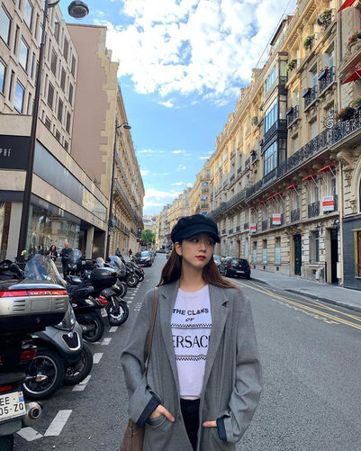

NGHỆ THUẬT PHỐI MÀU QUẦN ÁO TRONG THỜI TRANG
1. PHỐI QUẦN ÁO THEO BÁNH XE MÀU SẮC

Bánh xe màu sắc còn tên gọi khác là vòng tròn màu sắc, bảng phối màu quần áo,... Nó là một vòng tròn màu được sắp xếp theo mối quan hệ giữa các họ của màu sắc, là cầu nối giữa các màu sắc với nhau. Dựa vào bảng màu này, các nàng có thể có những nguyên tắc phối đồ rất cá tính và độc đáo.
Bánh xe màu có 12 ô và mỗi ô sẽ đại diện cho một màu chính, được chia thành hình nan quạt đều nhau. Mỗi cung màu cũng có 8 cấp độ màu từ đậm tới nhạt theo thứ tự vào tâm của vòng tròn.
2. PHỐI QUẦN ÁO THEO SẮC TỐ DA

Trước hết, các chị cần phân biệt làn da của mình thuộc loại da trắng hồng hay trắng xanh. Nếu may mắn sở hữu làn da trắng hồng, các chị sẽ nhận được “đặc quyền” mặc đẹp với tất cả các màu sắc, từ màu tối như đen, nâu, xanh rêu, xanh đen… cho đến các gam màu lạnh, màu coban, nude, pastel và cả neon.
Mỗi người sẽ có màu da khác nhau, việc xác định sắc tố da để chọn trang phục là điều quan trọng. Đây cũng là điều mà các nhà tạo mẫu thường khuyên khách hàng. Nếu bạn có sắc tố da ấm ( warm undertone ), hãy chọn màu ấm như đỏ, san hô, vàng, cam và đào. Ngược lại, nếu bạn có sắc tố da mát mẻ (cool undertone ), các màu như xanh ngọc, xanh dương sẽ phù hợp với bạn.
3. PHỐI QUẦN ÁO THEO TÔNG MÀU NÓNG VÀ MÀU LẠNH

Tông màu nóng (warm colours) là các màu như đỏ, cam, vàng, nâu cho cảm giác ấm áp, kích thích thị giác, làm cho mọi thứ trông nhỏ hơn về kích thước. Đó là lý do tại sao việc phối màu quần áo với những màu ấm sẽ tạo cảm giác vóc dáng thon gọn hơn.
Tông màu lạnh (cold colours) là các màu như màu xanh, tím, xanh lá cây… tạo cảm giác mát mẻ, dễ chịu. Những màu sắc trầm, dịu đòi hỏi phải biết cách hòa hợp với nhiều màu khác nên cũng kén người mặc hơn. Tuy nhiên, nếu biết cách phối màu quần áo thì tông màu này sẽ giúp phong cách thời trang của bạn trở nên rất ấn tượng.
Với những cô gái có nước da trắng sáng thì gam màu nóng là lựa chọn còn gì tuyệt vời hơn. Mọi người xung quanh sẽ không thể rời mắt khỏi bạn vì sự cuốn hút và nữ tính.
4. PHỐI QUẦN ÁO THEO QUY TẮC ĐỐI XỨNG

Là cách phối chọn 2 màu sắc đối xứng nhau trên bánh xe sắc màu. Ví dụ như màu đỏ và màu xanh lá cây. Với nguyên tắc phối màu quần áo đối xứng sẽ cho bạn 1 bộ quần áo nổi bật và rực rỡ. Với cách phối màu quần áo này, set đồ của bạn sẽ trở nên vô cùng nổi bật khi những gam màu sắc sặc sỡ đối xứng nhau được kết hợp thành một tổng thể duy nhất.
Nhưng để không trở nên chói lóa trong mắt người nhìn thì tốt nhất bạn không nên ghép đôi những màu tương phản hoàn toàn. Mà nên chọn một màu nhạt hơn (gần cạnh nó) với màu đối diện. Ví dụ như : Màu xanh dương với màu vàng cam. Thì bộ đồ của bạn sẽ trông thu hút và nhìn dễ chịu hơn rất nhiều.
5. PHỐI QUẦN ÁO THEO GAM MÀU TRUNG TÍNH

Ngày nay, xu hướng “simple is the best” đang thực sự lên ngôi. Đây là cách phối màu quần áo nữ thích hợp với nhiều độ tuổi từ các bạn trẻ đến những người trung niên. Lý giải cho điều này, đây là nguyên tắc phối màu quần áo có thể lựa chọn và phù hợp với nhiều hoàn cảnh khác nhau. Cùng với đó, những gam màu trung tính được yêu thích hàng đầu như: màu xám, màu trắng, màu nâu, màu ghi,… Thường thì các phương pháp phối màu giữa một màu trung tính sáng mix cùng một màu trung tính tối là sự kết hợp khôn ngoan nhất. Sự kết hợp này mang đến tổng thể một set đồ vô cùng hài hòa và nổi bật.
Những set đồ mang màu sắc trung tính cụ thể như xám, đen cũng được ưu tiên cho các ngày thu, đông giá lạnh. Lý do nằm ở đặc tính hút nhiệt của gam màu tối, từ đó giúp giữ ấm cơ thể cho người mặc. Ngoài ra, lựa chọn những gam màu này còn mang đến hiệu ứng thị giác phù hợp với những ngày đông lạnh giá.